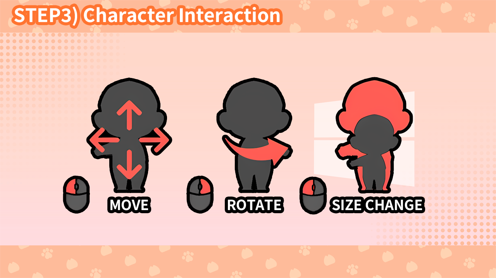

간단
상세
언어:
한국어
English
日本語
简体中文
繁體中文
🖱️ [3] 캐릭터 인터렉션

마우스로 캐릭터를 이동·회전·확대 등 다양한 인터렉션이 가능해요.
🖱️ 마우스로 캐릭터와 인터렉션할 수 있어요.
👆 마우스 좌클릭으로 캐릭터를 이동시킬 수 있어요.
🔄 마우스 우클릭으로 캐릭터를 회전시킬 수 있어요.
📏 좌클릭한 상태로 마우스 휠을 누르면 캐릭터 크기를 키울 수 있어요.
🪑 윈도우 창의 헤더나 작업표시줄에 캐릭터를 앉힐 수 있어요.
← 이전: VRM 모델 컨트롤
다음: 알람 활용하기 →